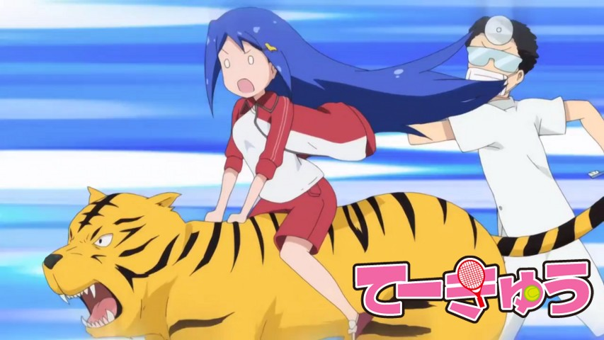

Teekyuu Saison 5 Ep 1 à 4 vostfr

Episode 02 : | |
Episode 03 : | |
Episode 04 : | |
Bonsoir,
Je vous présente Teekyuu, projet que j'ai décidé de reprendre à partir de la saison 5.
Pour ceux qui ne connaissent pas, c'est un animé court à haute teneur humoristique, et ça change radicalement de la Cyber Formule ^_^
Pas besoin de voir les saisons précédentes, sauf si vous voulez connaître plus d'absurdités propres à chaque personnage.
Vous pouvez bien entendu le retrouver sur cette page directement depuis le menu.
A bientôt!
Téléchargements et streaming
Episode 01 : | |Episode 02 : | |
Episode 03 : | |
Episode 04 : | |